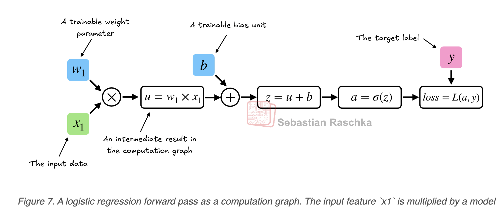
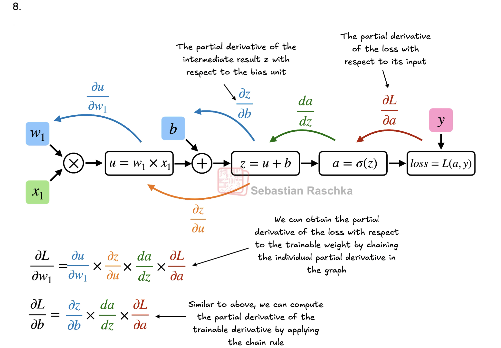

Before getting the book, I’m reading raschka’s PyTorch primer. It’s really interesting, and it’s awesome that I’m at the point where, even though I don’t understand the concepts completely, I understand the prerequisites — regression, partial derivatives, chain rule — these are all things I know how to do in basic settings and are in comfortable standings to apply them to these really advanced topics. Today I learned about a basic step forward step that would be taken in a very very elementary, one layer neural network. We use a net equation \( z = x_1 w_1 + b \) passed through a sigmoid function \( \delta \) to get a ‘guess probability’. From this, we get loss. Then, I learned about how we can use PyTorch’s autograd features in order to backpropogate through this process and optimize the weights. In other words, we start at the loss calcultated from \( z \wedge \delta \) and use partial gradients to reverse the process and optimize the weights. I’m documenting this process because I want this project to be serious — more serious than other things I’ve done. I know that, soon I’ll forget these equations and these graphs, but the more grip I have on what’s going on behind the scenes will help me when I see new code. I expect everything to be hard — I expect to struggle. Being idealistic starts most projects for me but acknowledging that it’s not going to be easy is what will help me finish it.
Photos for This Post

